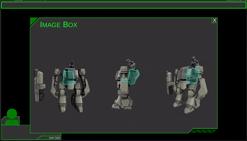
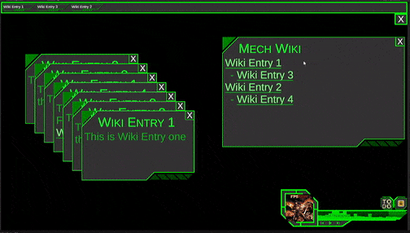

An Intro to TBT
This is a Turn Based Tactics Mech Game. I've not gotten around to naming it yet. So I've just been rolling with TBT as a runnings name.
Starting as an initial "keep my skills sharp while moving into doing more admin style things for my day job" toy project there is currently a variety of diffrent concepts and ideals all slammed together. There will eventually be a trimming and pruning that will make it make sense again.
The inception of the concept was "What if I had trading cards that I could just drag into a project and have a character spawn for that card". The "Cards" being a bit of stego on a PNG with a SQLite db stuck in there.
This has inevitably progress to a "export my design to a mate" as well as dreams of roguelike designs.
But first some graphics

Also some clicky things

And what's a game UI if a user can't cutomize the colours of it

The mechanics might be in flux and constantly shifting between concepts, but something that has stayed consistent is the concept of "mod as a trading card" which has always had particular appeal to me personally.
The visual style has experienced simular flux, initially starting as a PSX concept it's moved a little deeped into fidility.
The style is inspired by a dear friend of mine's love for the psudo relgious mech lore themes.
There is also some ideas around "If I'm shipping a mech in a card, probably need to explain a mech in the card as well"

That is about the it for the "This exists" portion of TBT for now.
Thank you Niko for a lovely mech model. I've modified it greatly and been having fun playing with it.
2023/04/20
And so we enter Data Land
After the initial bit of fun dealing with Models, Mechs, UI code, POC implementation of dragging cards into the Unity and a very humorous version of the exported cards.
I got very excited to try my frame export code and found a CC0 frame.

After collecting all the bits and pieces together in some sort of shape and form it was time to start getting into the data of it all.
As usual my initial SQL database layouts missed some things which was only noticed during actually using the data.
The main thing I noticed was loading a blob object on each row was a terrible idea. So I moved all the models and textures in their own table.
The rest of the tables just point at those tables which allow me loading in all kinds of details of mechs and pilots etc. followed by loading the models as needed was much kinder to memory.
Some Tools Were Required
The choice of treating all the loading logic etc as a managed DLL was made pretty early on, which I've been enjoying alot, along with sweet nothing lies such as "then I can just use the same card logic in another game by dragging on one DLL".
Which is clearly a soothing lie I tell myself.
Turned out to be very convenient.
The initial process of "close and reopen unity" after each rebuild to be able to test if my code workd was rather annoying but after some poking and scratching around in the back of my head I remembered this is why Unit Tests exists.
After some customization and some basic Unit tests for the newer section of my managed plugin, I am having a lovely time working on this plugin now.
I also realised I can get git style versioning from dbhub.io which has been profoundly useful to me during this process.
2023/05/30
What is a blog if not a complicated zine?
Creating a blog is just creating temptation. Initially this blog was intended as a "quick and dirty slap dash for a project log" but as anybody that has ever made a blog can attest. A blog has a prupose and a distraction baked into it.
The temptation to just start messing around with making it cool inevitably sets in.
And so this blog is now a zine. Just hit CTRL+P and it's a zine*
There are some caveats, ok there are many.
The reccomended print settings are:
- A4
- Margins = minimum
- Scale 97
- Headers&Footers as well as background graphics turned on
But you set those few print options and the text will fit a post per page and the Title will update to zine, the GIFs have even been tweaked to have their first frames be the crux of what I wanna show and the fonts been tweaked to be a print friendlier size.
The Utility of this is not much, but the temptation of making a zine out of this was too much.
The World Building had a little bit of an upgrade as well.
While no real environment art has been built there is an implemention somewhere with "loading a sql-table into a probuilder mesh to make cool bumpy terrain" and there is a really neat cathedral shown in post one that is about the extent of it.
The primary focus sofar has been "Neat UI" and "Prep all the data" and "prototype the card loading models and animations dynamically".
Which has been great fun. But it leaves space for several questions. Sometimes these questions lead to answers being presented to me such as when Sam asked these questions and then presented me the answers today.
Thank you for this one Sam, that was a fun conversational journey to go on.
This setting promises alot and I'm sure will deliver plenty of cool places to make things happen and happen in.
2023/05/31
Too Busy For Fun?
I found myself stuck for a little while. Not in the practical sense of development, my wall so to speak was much more spiritual than that.
I had gotten a stackoverflow.
A StackOverFlow is a pretty standard thing you encounter when writing code and writing code fast. It's basically a bug that happens when you try and do something you arnt supposed to do, which generally it tells you what it is you need to look at and resolve.
Which is an extremely vague oversimplification, but a sufficient explanation for the point of this post.
This was the worst thing to happen ever.
As described previously this game exists mostly around being a toy project, I drop an hour or two into the project after hours when I want to relax a bit and keep my dev skills sharp while mostly doing none dev things for my dayjob.
When I hit my editor button and the function returned an infinite amount of red. I closed the editor and just stopped, it was 2 AM and I was done for the night anyway.
And here enters the Rub
Every time I opended the editor again, I just hit the button and got the error and got lost in the soothing progress I was making in work again, abandoning my toy project till another time. Which just never came.
I have more complicated feelings on this little moment and break that I don't feel capable of expressing now. I'll probably edit that in later.
However a nothing bug just derailing motivation and progress on a toy project, taught me more than I am willing to admit about how I treat my toy projects and how my own motivation on fun vs progress has been facinating to me.
When faced with generating something that provides value vs a green field project I don't expect to be have an player base, the former was by far more rewarding.
Which after writing it down sounds alot more sane and matches my mentality alot more than I anticipated.
Anyhoo, bug resolved, progress continue.
The bug itself was me being silly and calling a function inside of the same function instead of the data loading function I was supposed to call there. Took all of litrally 30 seconds to solve when I opened the project again.
Look at the pretty data coming through
With the dopamine cycle of: thinkg of idea, write code on idea, see idea work in practice, being restored. I'm excited to continue on a toy project, because it's been legitemately fun.
2023/06/16